2020
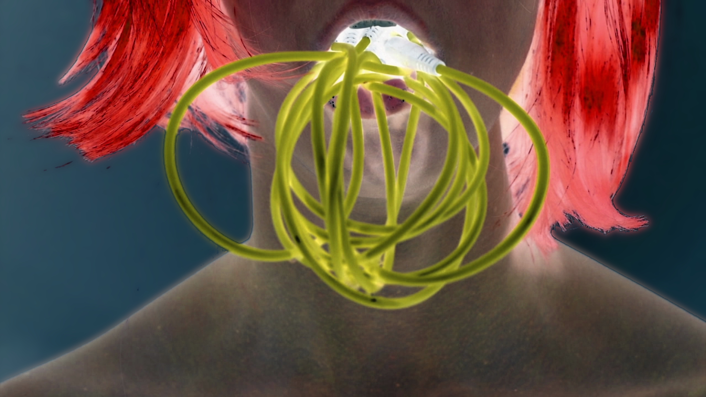
Eat to look inside (2020) is the first in a series of audiovisual performance actions that explore sound, images, and the symbolic potential the act of eating. This work proposes eating as a playful act to obtain information and inspect objects in a transdisciplinary way.
Eat to look inside addresses a proposal for non-verbal communication and libidinal evolution, through which the relationship with an object is expressed and organized. This work proposes a distance through a single audiovisual stimulus, whose interaction occurs only at the perceptual level through the observation. You can access through this link:
Note: after accessing the link, click / tap on the screen.
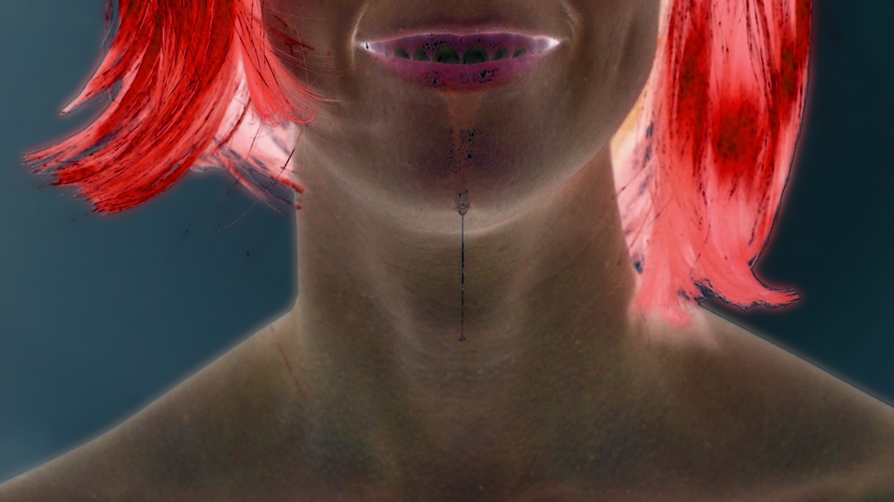
2019

One Line is a sound performance that explores the body and movement as a continuous succession of points tracing a space that does not form a particular figure. The body interacts/intervenes/activates a beam of laser light that is curved by sound and expands as a set of points on the same plane. In this way, the body and the line become an indivisible entity.
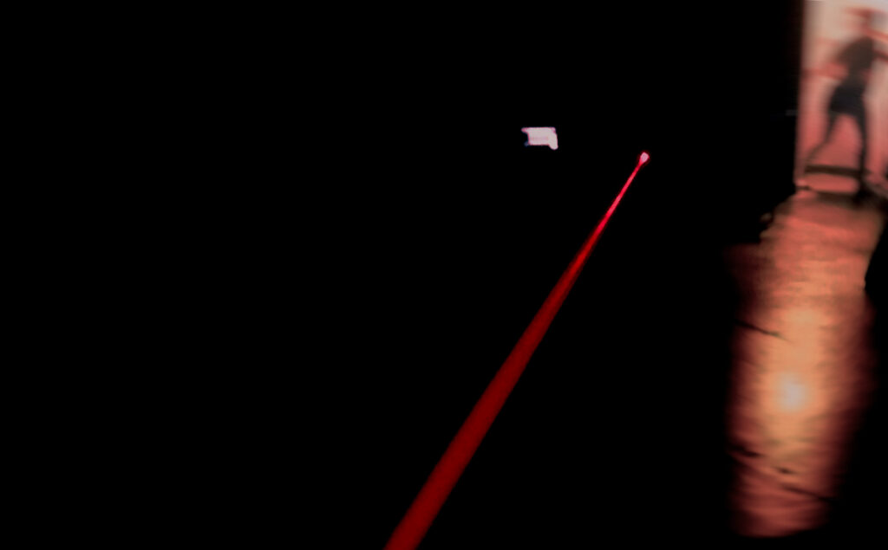
When the rest of the point-body in motion on the plane is destroyed, it moves in space, giving rise to the line. One Line represents the simplest and purest performative form which, at the same time, can be dynamic and varied. In this performance, the boundaries are blurred and the periphery becomes a contour and its container.
Idea, general concept and device design: Ezequiel Abregu Performance: Ezequiel Abregu, Florencia Staldecker

2018

Constanza (Mexico, 1990) has a house in her head. And it is not exactly that of Sáenz Peña Street 1041 in Zárate, the one that her great-grandparents built and where her mother grew up before her grandparents’ exile.
With the help of “artificial intelligence”, she believes that she can take advantage of that interior house, built by family memory, to recover something of value that vanished when she lost the house.
We accompany her to the door of the house today, but it seems to be more the architecture of another family memory. If memory builds and overwrites in other ways, generating other realities, what value does the truth actual resident in that house have?
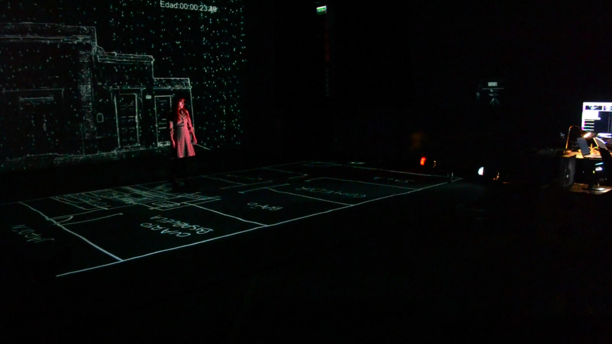
BODY INTERACTIVE LABORATORY
Latin American Experimental Hypermedia Center CheLA Buenos Aires, Argentina + Remap Ucla University of California, LA
Performance: Constanza Casamadrid Multimedia Design: Myriam Beutelspacher Myri Alcántar Interactivity Design: Juan Camilo León Sarmiento Dramaturgy and Staging: Ezequiel EC Steinman Sound Design and Original Music: Ezequiel Abregu Programming: Luciano Toledo TOLCH, Juan León Sarmiento Constanza Casamadrid Video: Ezequiel Steinman

Laboratory equipment OPEN P TRACK + TOUCH DESIGNER
Jeff Burke – Director. Santiago Núñez – Co-Director. Belén Tondo – Producer. Francisca Armando – Producer. Jared J. Stein – Resident artist / mentor, writer and playwright. Matthew Ragan – Resident / mentor artist, interactive media. Peter Gusev – Resident / mentor artist, software development. Zoe Sandoval – Resident artist, interactive media. Randy Illum – Resident artist, information studies. Sam Amin – Resident artist, software development. Renee MacDonald – REMAP project coordinator. Jael Díaz Vila – Graphic Design.
2018

URBAN BOSQUE was conceived of on three poetic points:
The instruments chosen consist of a wide range of analog synthesizers, voices, electric guitar, zither and a variety of native wind instruments. URBAN BOSQUE tries to investigate the intrinsic organicity of electric-analogue sound and the dialogue produced by acoustic instruments.
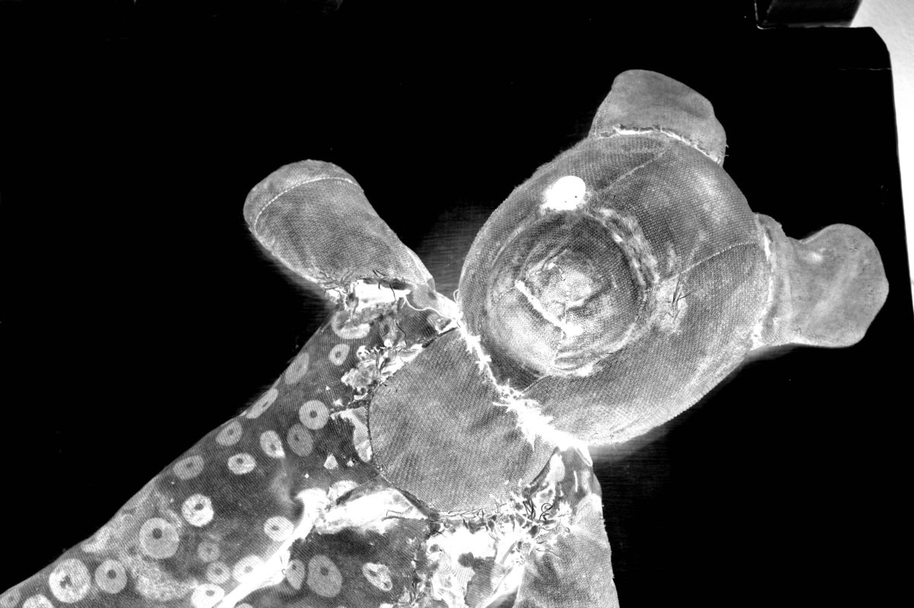
URBAN BOSQUE intends to establish the relationship between electricity, as a generator of sound, and the energy (mechanical, wind, electric) that comes from the body that excites the various acoustic instruments.


MUTE is an experimental music duo from Buenos Aires, Argentina, composed by Ezequiel Abregú and Martín Matus, where the construction of sound emerges from procedure and gesture. Our aesthetic has been influenced by many styles (contemporary, ambient, electronic and experimental noise), trying to make a personal and original proposal.
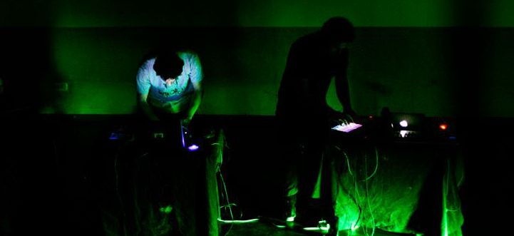


500k is a guitar duo composed by Ezequiel Abregú and Pablo Chimenti, where the construction of sound emerges from procedure and gesture. The project generates feedback saturating analog and digital processes as a basis for expansion and contraction of the timbrical texture. Improvisation, experimental music and composition melt into the performative experience.


2016

Chrysalis is an Interactive Sound Sculpture that relates sustainability, the human link with its environment and the processes that it generates over time. The authors of the sculpture are Carla Colombini (sculptor), Ezequiel Abregú & Martín Matus (sound artists).
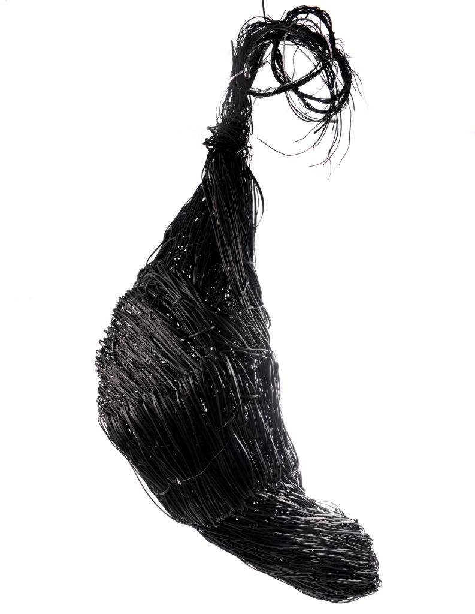
Chrysalis consists of a sculpture elaborated, for the most part, using a lot of e-waste. From a symbolic point of view, it proposes a critical and reflective position on the treatment of e-waste, encouraging spectators to reflect on environment problems and sustainability from art. In this framework, the work proposes a symbolic projection of the existing problem between humans and their technological waste, thus revealing a space of direct correlation between the contemporary urban environment and its dumps. The excessive consumption of high-tech devices, the cultural evolution dependent on technology, the programmed obsolescence strategies and the lack of controls and policies on the treatment of technological waste generate a new taboo in urban societies: technological dumps. Due to the exponential increase of these sites we have, as a consequence, the expansion of their limits, progressively invading our urban space.
Chrysalis intends to carry out, from the perspective of art, a reflexive look on this problem, concentrating on three main topics:
Art and technology, proposing a possible solution to the problem by reusing technological waste as materials for the realization of the sculpture,
Critical reflection, reaffirming the values referring to the way of relating to the city, the natural environment and technology, and
Sustainability, postulating us as part of a generation that acts to satisfy their needs in a conscious and sustainable way.

2014
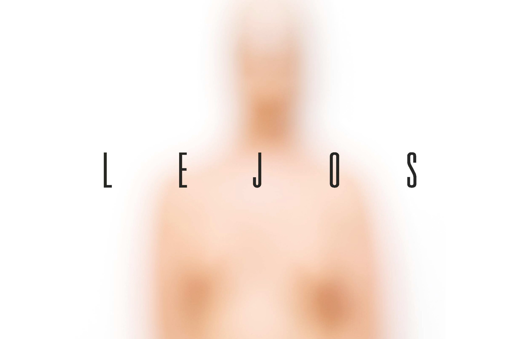
The actress is searching for the bodies of biographical-fictional representations of the past in her memory. Through an extreme physical journey that begins with breathing, the bodies of the past appear and update to the present. Far away explores how to inhabit an empty space and rid the body of certain memory, in an attempt to transform the mechanisms of representation and to experiment some autonomy.
LEJOS is a multidisciplinary research, combining theater, performance, visual and sound arts. From the beginning of the creative process, the challenge consisted of working on the perceptive thresholds of breathing and silence, in the unfolding of the acoustic-stage space and the transition points where a symbol or sound can be a thing or another depending on the context. In particular, from the point of view of the sound treatment of the work, the idea of memory as noise was approached as a key concept for the composition of the sound space. In this framework, the treatment of silence and noise acts as a spatial and temporal framework (which also connects with the character’s past), constituting a crucial link between the symbolic aspect of the work and the fictional past of the actress.

Credits
Actress: Florencia Bergallo / Sound design and music: Ezequiel Abregú / Photo: Mariana Roveda Scenic / Dramaturgy: Florencia Bergallo y Marina Sarmiento / Dramaturgy advice: Ezequiel Steinman / Dressing design and production: Belén Parra / Photo character production: Néstor Burgos / Artistic collaboration: Julieta Potenze / Production: Cooperativa LEJOS / Production assistant: Julieta Benedetto / Technical assistant: Selva Aimé / Direction assistant: Micaela Moreno / Concept, choreography and direction: Marina Sarmiento
Sarmiento's Journeys
2016

Four women travel through different landscapes of their memory through a pulse that builds their own cartography. They constellate spectra and landscapes that recover the voices from the stones that the books name as desert. The physical and emotional experience of Sarmiento’s Journeys opens the possibility of inventing a communal, visceral and mestizo body anchored in the present.
Sound design, original music & live performance for Sarmiento’s Journeys, directed by Marina Sarmiento.
Sarmiento’s Journeys proposes a contemporary and bastard appropriation of the trips that D. F. Sarmiento made during the 19th century. Through an aesthetic contrast in a biographical and singular journey, Marina Sarmiento together with the dancer M. Eugenia Roces, the actresses Cecilia Blanco and Florencia Bergallo and the musician Ezequiel Abregú, seek on stage to put in tension the memory of the body and the landscape.

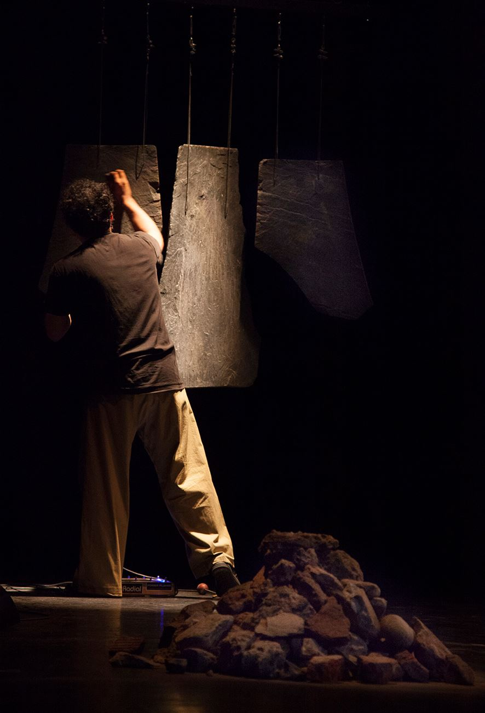
Credits
Performers/Creatives: Florencia Bergallo, Cecilia Blanco, María Eugenia Roces, Marina Sarmiento / Sound Design & Live Performance: Ezequiel Abregú / Costumes: Belén Parra / Dramaturgy: Ezequiel Steinman / Bibliographic Advice: Julieta Benedetto y Natalia Lerussi / Photo: Marcos Crapa / Graphic Design: Martín Molinaro / Light Designer: Gonzalo Córdova / Sound Assistance: Exequiel Redchuk / Coach: Nicolas Delavanso / Choreograph Assistance: Débora Diskin / Director Assistance: María Eugenia Roces / Executive Producer: Julieta Benedetto / General Production: Cooperativa Los viajes de Sarmiento / Concept, Choreographer & Director: Marina Sarmiento
2013
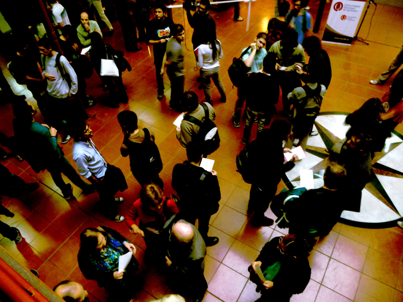
Bowl of secrets is a generative sound installation created by Damián Anache, Ezequiel Abregu and Martín Matus, for the Nota al pie (Editorial Universidad Nacional de Quilme’s bookstore) opening, held on April 11, 2013.
Listen Bowl of Secrets
The approach of the composition is based on the idea of generative music. A computational algorithm was designed in the Pure Data (a.k.a. PD) environment using a system of rules in order to create a structure or sound texture where the sound results are unique each time. Bowl of secrets uses an arrangement of 8 speakers with an uniform and circular distribution as a reproduction device. The work articulates textures typical of electroacoustic music and texts by Erik Satie, using aesthetic criteria typical of the ambient stream. In this aesthetic line, the sound discourse tries to satisfy the listener in two levels: it offers an environment of auditory comfort and, at the same time, it provides a subject of interest in a situation of attentive listening to music. Both conditions work simultaneously without conditioning one reception or another.
2012

Instructions to get in touch with supra-physical worlds / Oceans have ears
In 2011, through the support of the music publishing company MELOS (Bs. As., Argentina), Ezequiel Abregu had the opportunity to work together with the Compañía Oblicua ensemble, directed by Mtro. Marcelo Delgado. From this collaboration emerged two instrumental ensemble pieces called “Instructions to get in touch with supra-physical worlds” and “Oceans have ears“. These pieces were premiered by the Compañía Oblicua (Oblique Company) on July 4, 2012, National Library auditorium (Buenos Aires, Argentina).
2013
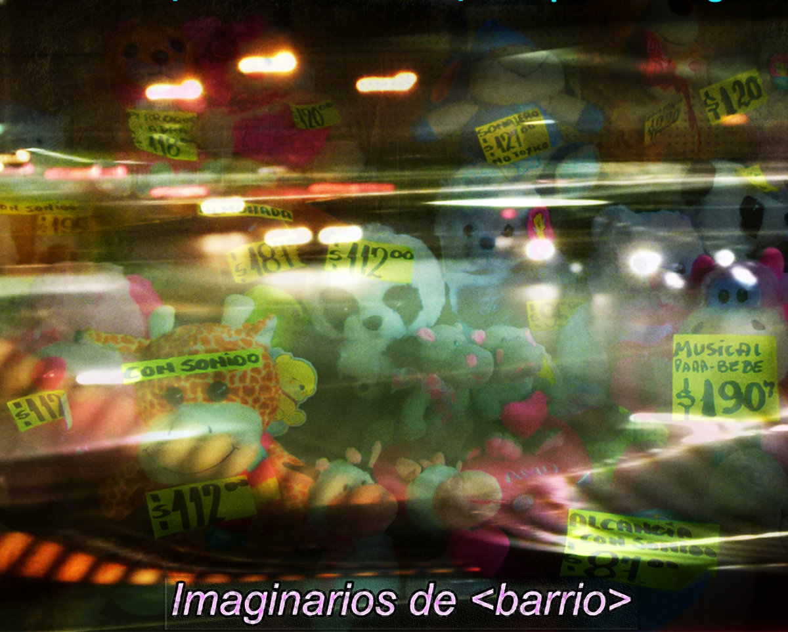
Imaginarios de
Imaginarios de
The sound environment is constructed from a fragmentary and arbitrary register that does not hierarchize sounds or interventions, words or moments, but elaborates unprejudiced links in a dense soundtrack.
Credits Sound Design & Programming: Ezequiel Abregú / Martín Matus Lerner (MUTE) Interviews: Heliana Vera
Generative sound installation for surround sound presented in November 2013 in The Night of Museums – The Paternal Space Project (Bs As, Argentina).